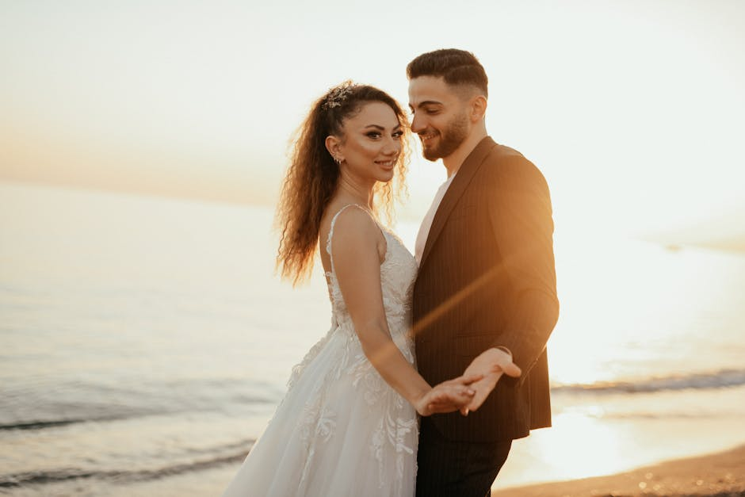

Our Mission & Vision
At Snitch Labs, we operate as an independent promotional portal dedicated to introducing couples to the artistry of Said Yes Studios. We understand that selecting the right wedding photographer is one of the most critical decisions for your big day.
Our platform highlights a comprehensive suite of services, from intimate engagement photos to grand destination wedding photography. We believe that exceptional bridal portraits and candid ceremony shots are the ultimate evidence of a life well-loved.
By showcasing the meticulous work and creative vision of established professionals, we help you secure visual memories that will be cherished for generations, no matter where your celebration takes place.
